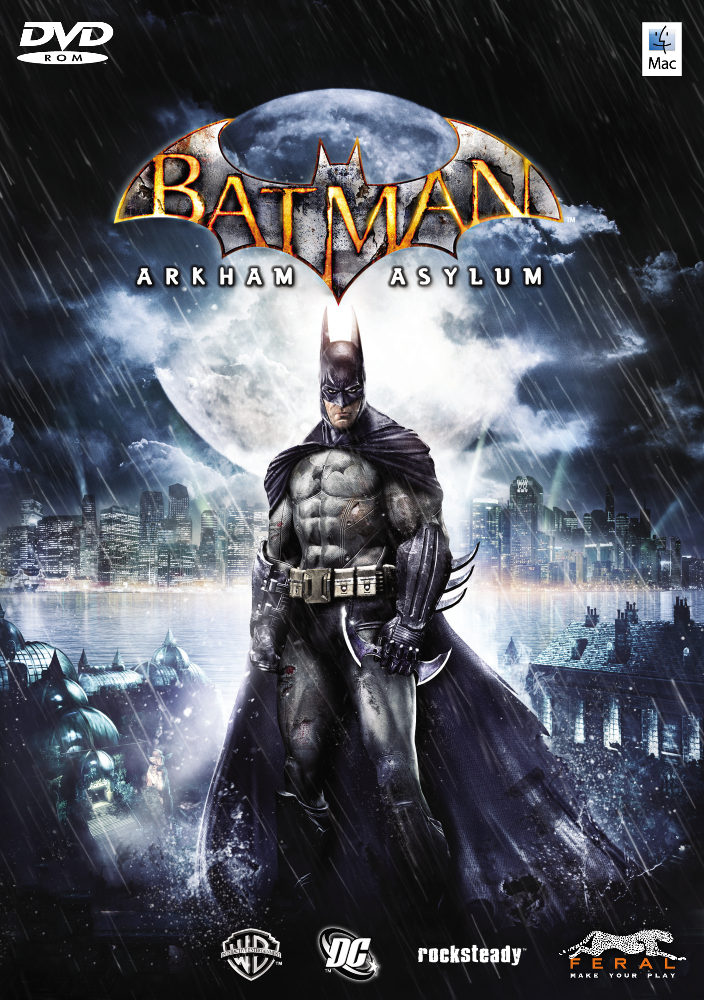
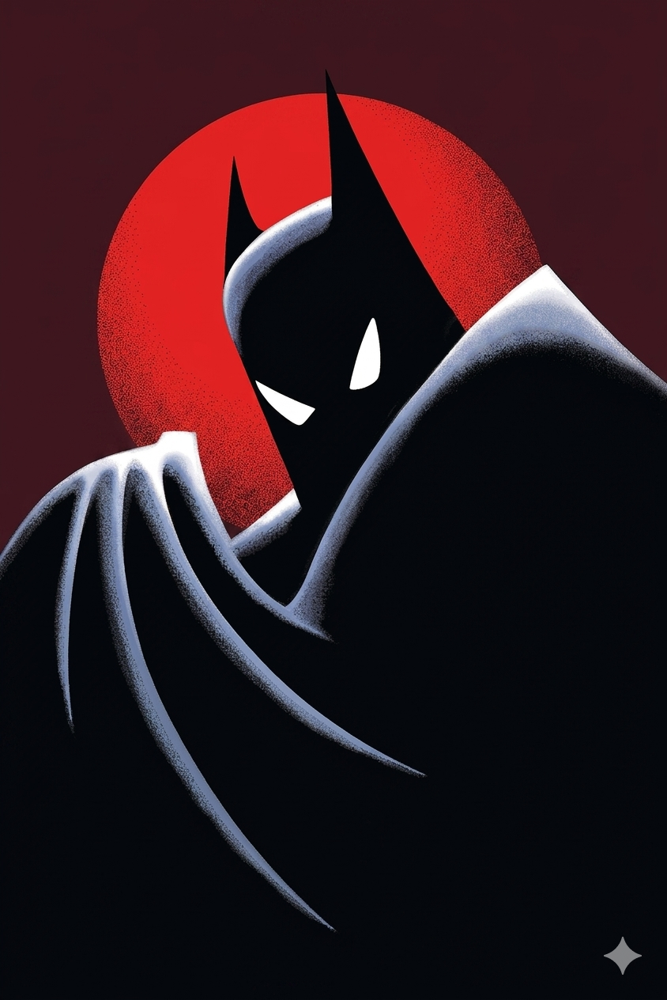

El impacto de los superhéroes en el cine, los videojuegos y las series ha sido profundo, moldeando cada medio a lo largo del tiempo y creando algunas de las franquicias más lucrativas de la historia del entretenimiento.
Películas
En cine, Superman (1978) fue pionera, estableciendo un nuevo estándar para las adaptaciones de cómics y marcando el inicio del género moderno de superhéroes. Batman (1989) introdujo un enfoque más oscuro, mientras que Spider-Man (2002) revitalizó el género con su fórmula exitosa.
The Avengers (2012) consolidó el universo cinematográfico de Marvel, demostrando el potencial de las franquicias compartidas. Incluso cuando muchas películas actuales son mediocres, algunas excepciones logran alcanzar billones de dólares como Avengers: Infinity War, Avengers: Endgame o en animación ITSV y ATSV.
Video por: Te lo resumo
Video por: GO! el monitor geek
Videojuegos
En videojuegos, Spider-Man 2 (2004) para Xbox, PS2 (y demás consolas de la época) fue un parte aguas para el género y los juegos de mundio abierto. Batman: Arkham Asylum (2009) innovó con su sistema de combate y narrativa, mientras que Spider-Man (2018) para PS4 destacó por su jugabilidad.
Lego Batman: Legacy of the Dark Knight (2026) es el nuevo videojuego de TT Games, regresando al caballero nocturno a una nueva aventura revisitando los más de 80 años de vida del enmascarado (con el sentido del humor característico de Lego).
Ganó el récord mundial Guinness como el «Juego de superhéroes más aclamado por la crítica» y ha sido citado como uno de los mejores videojuegos jamás creados. — Wikipedia · Batman: Arkham Asylum

Series de Televisión
En series, Batman: The Animated Series (1992–1995) fue pionera en la animación de superhéroes, seguida por Spider-Man: The Animated Series (1994–1998), que popularizó al personaje en televisión.
Daredevil (2015–2018) destacó por su tono oscuro y desarrollo de personajes. En la actualidad, tanto Marvel, DC y empresas independientes como The Umbrella Academy siguen realizando series, aprovechando el formato episódico para lograr narrativas más profundas.

Y también la Música
Los superhéroes también han inspirado el mundo musical. Un ejemplo icónico es Kryptonite de 3 Doors Down, canción basada en el universo de Superman que se convirtió en uno de los himnos del género alternativo de los 2000s.
Kryptonite
3 Doors Down · The Better Life (2000)